Every genetic analysis starts here. Block 3 reads the data from a file, from its own spreadsheet, from the Block 2 field book or from one of the 21 examples; works out what each column is; infers the mating design and the field design; checks the quality of the data and analyzes the trial as its design requires. The adjusted means and the error it produces are the raw material of Blocks 4 to 11.
Block 3 has five cards that are worked from top to bottom. Loading the data is enough: the other four fill in by themselves and are recomputed as soon as you correct something, be it the role of a column, the design or an observation you decide to exclude.
Throughout the chapter the simulated example diallel in an α-lattice at three locations is used: ten parents crossed with Griffing’s Method 2 (the 10 parents and their 45 crosses) plus five checks, 60 entries in all, evaluated in an α-lattice with blocks of six plots, two replicates and three locations (Chapultepec, Los Altos and Valle Verde). It is a Block 2 field book filled from a known model: σ²GCA = 0.16, σ²SCA = 0.09, σ²blocks = 0.20 and σ²e = 0.36 (t/ha), so that what is estimated can be compared with the truth. Data quality is illustrated with Hayman’s (1954) diallel of Nicotiana rustica, and the data sheet with the 4 × 4 maize diallel.
The card 1 · Load data offers three tiles and, below them, the gallery of examples. The rule is the same for any source: one row per plot (or per plant) and one column per item. The first row with content holds the column names, which may be in Spanish or in English.
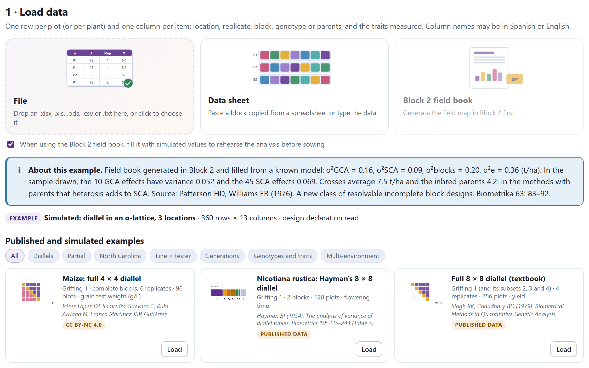
Drag the file onto the tile File or click it to choose it. Workbooks in .xlsx, .xls, .xlsm and .ods are read, as well as .csv, .tsv and .txt texts. In a workbook with several sheets the one with the most data is opened and the menu Workbook sheet appears to switch to another. In a text, the separator (comma, semicolon or tab) is inferred from the first 30 lines. Empty rows are ignored, as are lines starting with # before the headers, except the declaration line of Block 2 (see below).
An empty cell is a missing value, and so are NA, N/A, NaN, null, ., .., -, --, ?, *, missing, perdido, faltante, s/d, sd, nd, n.d. and the spreadsheet errors #N/A, #VALUE! and #DIV/0!, in upper or lower case. If some other text appears in a variable (for example, 12.5a), it is also taken as missing, and card 2 reports how many there were and in which row the first one is.
The tile Data sheet opens a spreadsheet inside the app, for anyone who does not have the file at hand or prefers to paste the data. Paste with Ctrl+V a block copied from any spreadsheet (or a text separated by commas, semicolons or tabs), or type directly. The arrows, Tab and Enter move the selection; F2 or a double click edits the cell; Delete clears it; Ctrl+Z undoes. The buttons at the top insert or delete rows and columns, add a hundred rows and adjust the width. The sheet holds up to 20,000 rows and 5,000 columns.
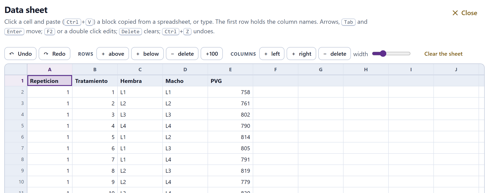
Below the sheet, Save as downloads its content as .xlsx, .ods, .csv (with comma or semicolon) or .tsv, with the name you type in Name. The button Use these data → sends the sheet to cards 2 to 5 just like a file. If the browser does not let you paste into the grid, open Pasting does not work in this browser? Paste into this box instead and paste into the text box that appears.
The sheet is saved in the browser every time it changes (the notice saved in this browser appears for a moment) and is restored when it is opened again, even after the page has been closed. It is the only part of the data that the app keeps: a file or an example that was loaded is lost on reloading. Since saving is local, the sheet does not travel to another computer or another browser; for that, download it. When the data come from the sheet, card 4 marks the rows of the outliers in it, with the same row number.
The tile Block 2 field book takes the plan and the field map of Block 2 without downloading anything (Section 2.8). With the checkbox When using the Block 2 field book, fill it with simulated values… ticked it arrives with a simulated yield for practice; without it, with the yield column empty. Every Block 2 field book, including one downloaded and filled by hand, starts with a declaration line like this one, that of the example:
#BreedingPro fieldbook, mating=griffing, method=2, field=alpha, reps=2, k=6, locations=3, entries=60, seed=4242, F=1
Block 3 takes from it the mating design, the method and the field design (mating, method and field) without having to infer them; the other items are for information. If the spreadsheet split the line over several cells, it is joined again. It is best not to delete it.
The gallery Published and simulated examples has 21 data sets. The buttons at the top filter them by family (Diallels, Partial, North Carolina, Line × tester, Generations, Genotypes and traits and Multi-environment). Each card shows the title, the design, the size, the first citation and a label: CC BY-NC 4.0, published data or simulated. When one is loaded, the box About this example gives all its sources and, for simulated ones, the true values. The examples are read exactly like a user’s file; Table 3.4 sums up what Block 3 recognizes in each one.
The card 2 · Columns shows the first eight rows of the table with a menu above each column. The app proposes the role of each one from its name and its contents; you correct whichever needs it and everything is recomputed at once. Under each name you can read whether the column is numeric or text, how many distinct values it has, how many empty cells and, if it detects it, the decimal comma. A colored band groups the roles: blue for the field design, purple for the genotype and the pedigree, green for the response traits and light gray for what is ignored.
The examples come with their roles set. In your own data, check the list before going on: if the entry column is missing, the card says so in red and cards 3 to 5 do not appear until it is corrected.
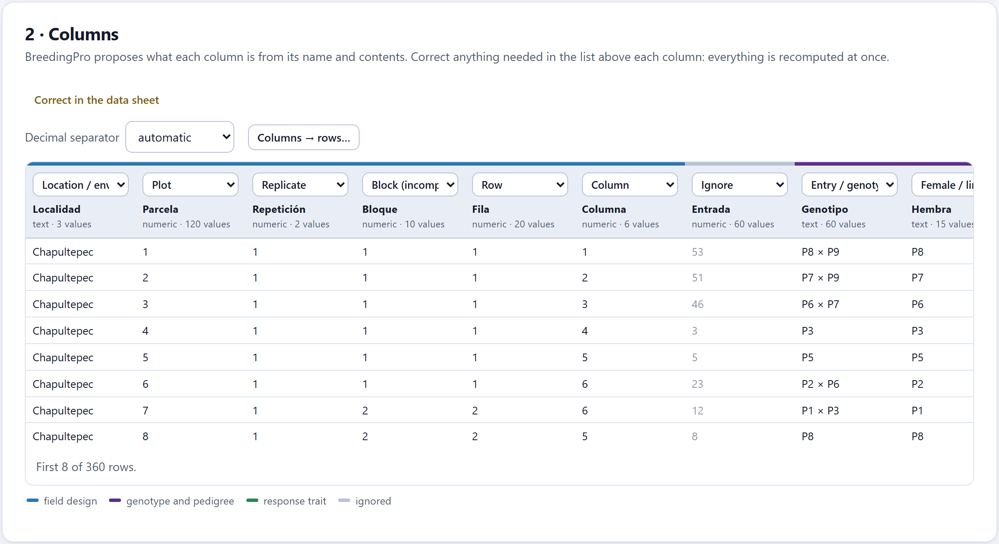
| Role | Names recognized (examples) | What it is for |
|---|---|---|
| Response trait | any column with 90% or more numbers and no other role | What is analyzed; there may be several |
| Location / environment | localidad, ambiente, sitio, lugar, ensayo, experimento, estación, loc, env, location, environment, site, trial | Separates the environments |
| Year / season | año, ciclo, temporada, campaña, year, season, cycle | Joined to the location: each location × year is an environment |
| Replicate | repetición, rep, r, réplica, bloque completo, replicate, replication | Complete replicates |
| Block (incomplete) | bloque, subbloque, bloque incompleto, block, iblock, blk | Blocks within each replicate, or plain blocks |
| Plot | parcela, unidad experimental, plot, plot number, unit | Identifies the plot; if it repeats, the rows are plants |
| Row · Column | fila, hilera, rango, row, range · columna, pase, col, column, tier | Position in the field: map and row–column design |
| Entry / genotype | genotipo, entrada, tratamiento, variedad, cruza, híbrido, familia, clon, material, accesión, cultivar, nombre, código, genotype, entry, variety, cross | The name of the entry |
| Female / line / parent 1 | hembra, madre, línea, progenitor 1, planta F2, female, dam, mother, line, parent 1 | Female parent, the line or the F2 plant |
| Male / tester / parent 2 | macho, padre, probador, progenitor 2, male, sire, father, tester, parent 2 | Male parent or tester |
| Set | conjunto, set | Sets of the North Carolina designs |
| Generation | generación, filial, generation | P1, P2, F1, F2, backcrosses… |
| Entry type | tipo, clase, categoría, tipo de entrada, type, class, category | Check, parent, reciprocal, line, tester… |
| Plant / individual | planta, individuo, progenie, plántula, árbol, muestra, plant, individual, tree, sample | Plant-level data |
| Ignore | whatever fits no role and is not numeric | Notes, dates, order numbers |
A numeric column with a name the app does not recognize (Lot, Furrow, Key) is proposed as a response trait and would be analyzed as if it were a character. Move it to Ignore or give it its role. The same the other way round: a trait with the name of a role, such as a column Type that actually measures something, must be marked as Response trait.
The pedigree can come in three ways, and the app recognizes all of them:
The type of each entry comes from the column Entry type when there is one (check, testigo or control; parent or parental; reciprocal; line; tester; F1, cross or hybrid). If there is none, it is inferred from the pedigree: a female equal to the male is a parent, a female different from the male is an F1, and an entry without parents in data with crosses is a check.
In the North Carolina designs and the line × tester, females and males are different plants or lines even if they share a code (1 × 1 is a cross, not a parent): the app marks them with ♀ and ♂ and says so. If the codes repeat across sets, the set is prefixed to them (S1·3).
The menu Decimal separator is automatic by default: each column uses a decimal comma if it has more values like 12,5 or 1.234,5 than like 12.5. Choose point (12.5) or comma (12,5) to impose it on all of them.
Some data arrive in wide format: one column per replicate or per environment. The button Columns → rows… turns them into long format. Tick the columns that are replicates of the same trait (those named R1, Rep2, B3, E1 or Loc2 come ticked), type the name of the new factor and that of the trait, and press Stack. Names such as E1B2 or Loc1_Rep2 are split into two factors.
| Genotype | R1 | R2 | R3 |
|---|---|---|---|
| A | 5.2 | 4.9 | 5.6 |
| B | 6.1 | 6.4 | 5.8 |
| … |
| Genotype | Replicate | Yield |
|---|---|---|
| A | 1 | 5.2 |
| A | 2 | 4.9 |
| A | 3 | 5.6 |
| … |
If the table is a diallel in matrix form (one parent per row, the same parents as column headers and a value in each cell), Diallel table → rows also appears, which turns it into three columns: female, male and value. Undo the reshaping goes back to the original table. Finally, Correct in the data sheet opens the loaded table in the data sheet to fix a value at its source; afterwards, Use these data → loads it again.
The card 3 · Recognised design says which experiment the app believes you have. Six tiles sum it up: the mating design with its degree of confidence (high, medium or low; declared if it came in the declaration line and chosen if you changed it yourself), the entries with their parents and checks, the field design, the environments, the replicates with the plots per environment and the traits. Below, a list explains why each conclusion was reached and points out what is missing or left over.
The app checks the rules of Table 3.2 in order and keeps the first one that holds. In a diallel, the method depends on whether there are parents (at least half of them) and reciprocals (in at least half of the pairs): with both, Method 1; parents only, 2; reciprocals only, 3; neither, 4.
| # | If in the data… | then |
|---|---|---|
| 1 | three or more entries, and at least 60% of them, are generation codes | Generation means |
| 2 | there is no cross with its two parents | Genotype trial |
| 3 | the testers are P1 and P2 (or P1, P2 and F1) and four or more plants are crossed with them | North Carolina III (with three testers, triple test cross) |
| 4 | there are no sets and the same names appear as female and as male, or there are three or more selfed parents | Diallel: Griffing’s if 90% or more of the pairs are present; partial if not |
| 5 | each male has its own females (nested) and each female a single male | North Carolina I |
| 6 | there are types line or tester, the headers say line or tester, or there are up to five males and at least twice as many females | Line × tester |
| 7 | none of the above | North Carolina II (factorial) |
In the partial diallel, the app checks whether each parent enters the same number s of crosses and in the circulant order of Kempthorne and Curnow (1961); if so it says so, and if not it warns that the analysis will be by least squares. The confidence drops to medium when entries of the complete design are missing, when the partial diallel is not circulant, when crosses of the factorial are missing, when the females of a North Carolina II repeat codes across males (it may be a I) or when the North Carolina III or the triple test cross have fewer than 20 plants.
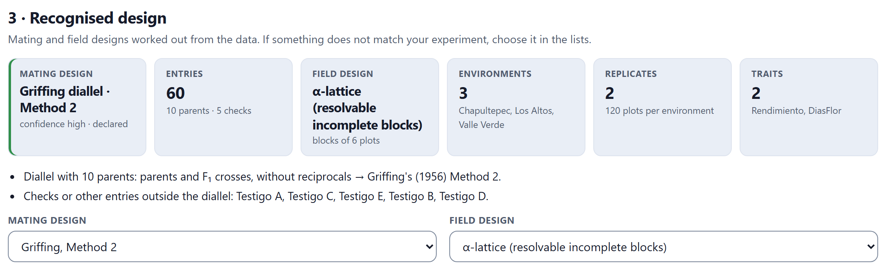
The field design is recognized in each environment separately, with the rules of Table 3.3. If the environments differ, the tile says differs between environments and the combined analysis uses only the replicates.
| Situation | If also… | then |
|---|---|---|
| Two or more replicates | a few entries are in all of them and the rest only once (less than 60% of the cells filled) | Augmented blocks |
| there are more blocks than replicates and the largest block takes less than 75% of a replicate | α-lattice (resolvable incomplete blocks) | |
| in any other case | Randomized complete blocks | |
| No replicates, two or more blocks | every block has all the entries | Randomized complete blocks (the blocks act as replicates) |
| there are checks in every block and the rest appears once | Augmented blocks | |
| the entries repeat | Incomplete blocks | |
| nothing repeats | Unreplicated: there is no error | |
| Neither replicates nor blocks | the entries repeat, or there are plant-level data | Completely randomized |
| there is a single value per entry | Entry means |
The row–column design is never chosen automatically: if the plots have row and column and you want to use them in the model, choose it in the menu. The card also warns of other field problems: missing replicate × entry combinations (adjusted least squares are used), a plot that appears several times without being plant-level data (it is averaged) and a plot with two different entries, which is an error and must be corrected.
If something does not match your experiment, change it in the menus Mating design (automatic, Griffing Methods 1 to 4, partial diallel, the three North Carolina designs, triple test cross, line × tester, generation means or genotype trial) and Field design (automatic or one of the seven designs). The change is marked as chosen and everything that follows is recomputed. Typical cases: a North Carolina II that is really a I because each male has its own females, or a trial with row and column that you want to analyze as rows and columns.
The figure Crosses present in the data draws the table of the design: female × male in diallels and the North Carolina II, male × female in the I, F2 plant × tester in the III and the triple test cross, line × tester in the line × tester. Each cell is colored by the number of plots or, with Colour by, by the mean of the trait; parents carry a border, and a cross that the design expects but is not in the data is marked with an ×, with the legend missing from the data.
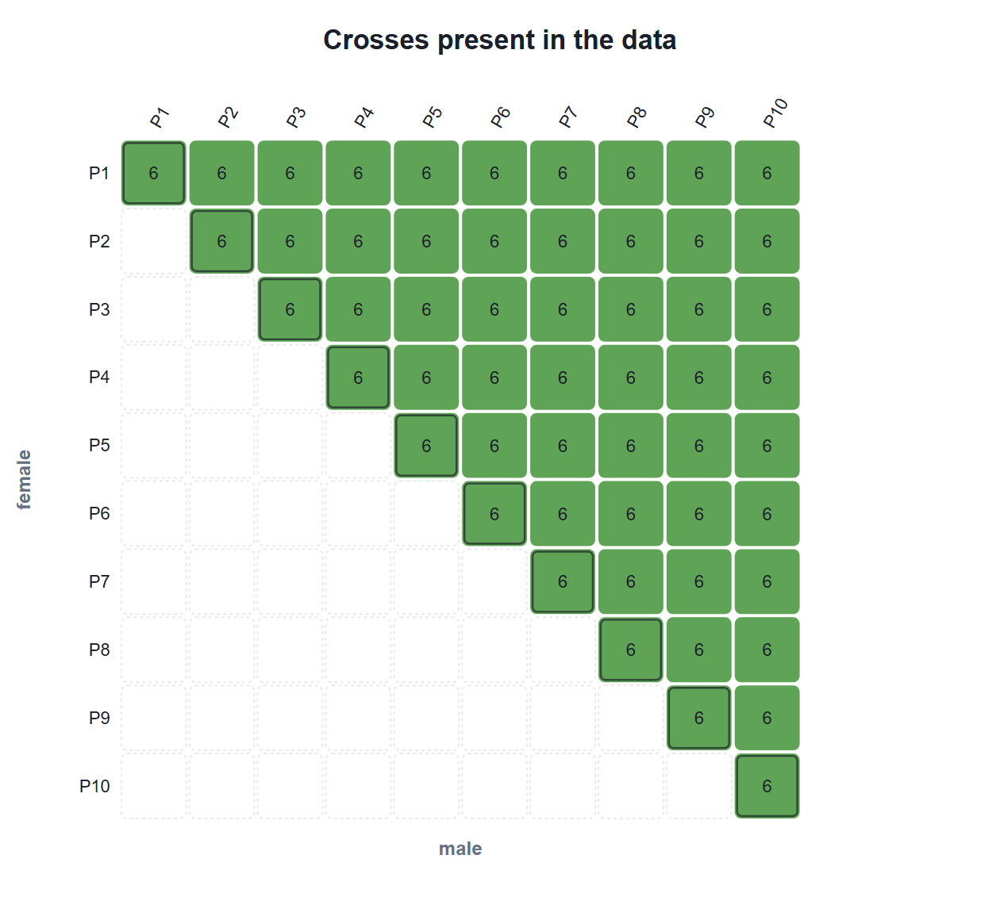
If the design is incomplete, the box Entries missing from the design lists the missing crosses, parents, reciprocals or generations. At the end, Recognised entries (folded) lists each entry with its female, its male, its type and its number of records: it is the quickest way to check that the pedigree was read correctly.
Table 3.4 serves as a check of the recognition and as a guide to choosing an example similar to your data.
| Example | Mating | Field | Env. | Outliers | Next |
|---|---|---|---|---|---|
| Maize: full 4 × 4 diallel | Griffing, Method 1 | RCB | 1 | 1 | 4 |
| Nicotiana rustica: Hayman’s 8 × 8 diallel | Griffing, Method 1 | RCB | 1 | 2 | 4 |
| Full 8 × 8 diallel (textbook) | Griffing, Method 1 | RCB | 1 | 0 | 4 |
| Diallel with parents in two environments | Griffing, Method 2 | RCB | 2 | 0 | 4 |
| Maize: means of 36 single crosses | Griffing, Method 4 | means | 1 | — | 4 |
| Maize intervarietal crosses | Griffing, Method 2 | means | 1 | — | 4 |
| Maize: partial diallel of 8 lines | circulant partial, s = 5 | RCB | 1 | 0 | 6 |
| North Carolina I | North Carolina I | RCB, by plant | 1 | 0 | 6 |
| Potato: North Carolina II | North Carolina II (♀ and ♂) | RCB | 1 | 0 | 6 |
| North Carolina III | North Carolina III, medium confidence | RCB | 1 | 0 | 6 |
| Simulated: triple test cross | triple test cross | RCB | 1 | 0 | 6 |
| Line × tester with parents | line × tester | RCB | 1 | 0 | 6 |
| Maize: 13 hybrids and 15 traits | genotype trial | RCB | 1 | 1 | 8 |
| Maize: 13 hybrids in 4 environments | genotype trial | RCB | 4 | 1 | 9 |
| Oat: 10 genotypes in 14 environments | genotype trial | RCB | 14 | 2 | 9 |
| Potato: 28 clones in 6 localities | genotype trial | RCB | 6 | 2 | 9 |
| Means of 17 genotypes in 12 environments | genotype trial | means | 12 | — | 9 |
| Simulated: inbred lines with a pedigree | genotype trial | RCB | 3 | 0 | 9 |
| Simulated: diallel in an α-lattice | Griffing, Method 2 (declared) | α-lattice | 3 | 0 | 4 |
| Nicotiana rustica: six generations | generation means | CR, each plant a unit | 1 | 0 | 7 |
| Simulated: generation means, plant by plant | generation means | RCB, by plant | 1 | 0 (1 to check) | 7 |
The card 4 · Data quality checks one trait at a time; the menu Trait in the corner switches from one to another. It has four parts: a summary by environment, the distribution, the field map and the list of outliers. The summary gives, for each environment (and for all together if there are several), the records, the missing values, the excluded ones, the mean, the standard deviation, the coefficient of variation, the minimum, the maximum and the skewness.
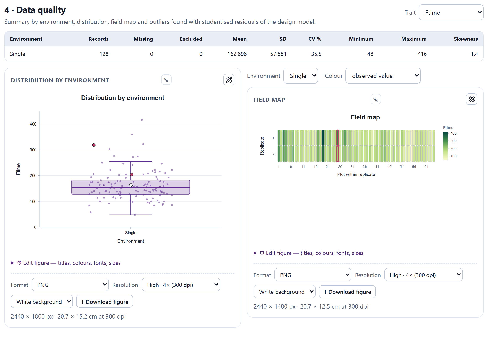
The distribution by environment is a box plot with the observations on top (they can be hidden) and a diamond at the mean; the values flagged as outliers are painted red. The field map puts each plot in its place: by row and column if the data have them and, if not, in the order of the rows within each replicate. The menu Colour switches between the observed value and the standardised residual of the design model; the latter, on a diverging scale, reveals patches in the land (clustered residuals of the same sign) that the blocks did not absorb. Suspect plots carry a red border in both.
Each observation is compared with what the design model predicts (for example, replicate + entry in complete blocks), by means of its externally studentized residual. Two levels: outlier, if the Bonferroni test gives p < 0.05, and check, if |t| ≥ 3.5 without reaching that threshold. The table gives the environment, the entry, the replicate or block, the value, the fitted value, t, p and the rows of the file where it is.
In complete blocks with two replicates, the two residuals of an entry are equal and of opposite sign: if one plot is abnormal, its partner is flagged with the same |t|. That is what happens with D × A (t = −4.68 and +4.68). Statistics cannot tell which of the two is wrong; the field book can.
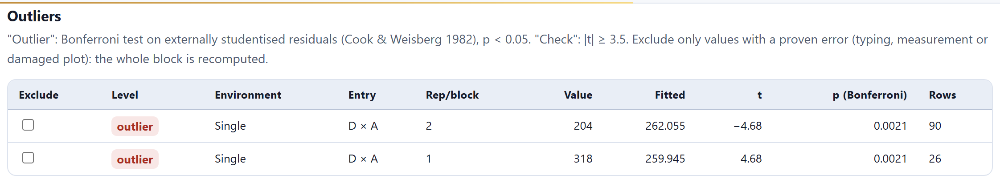
ei is the residual of plot i, hii its leverage and s(i) the error standard deviation estimated without that plot, so that a very odd value does not inflate the scale by which it is judged. ti follows a t with the error degrees of freedom minus one; since the n plots are tested at once, the p value is multiplied by n (Cook and Weisberg, 1982). Thus, in a trial of 128 plots, fewer than 0.05 false outliers in all are expected by pure chance, not six.
The checkbox Exclude removes the observation from all the analyses: those of this block, those of the genetic blocks and the report, where the excluded rows appear in gray. Use it only when there is a proven error (in data entry, in measurement or a damaged plot), not because a value gets in the way. Restore every excluded observation brings them all back at once, and the note below says how many are out.
The card 5 · Field-design analysis fits to each environment the model that matches its design (Table 3.5) and delivers the adjusted means of the entries. The menu Environment picks the environment or, if there are several, the Combined analysis (Section 3.7), which is what is shown when the data are loaded.
With sets (North Carolina I and II), the model adds set and replicate within set. In the α-lattice and incomplete blocks, the analysis of variance is intra-block (sequential sums of squares, with the entries adjusted for blocks), but the means are estimated with blocks as random effects by restricted maximum likelihood (REML; Patterson and Thompson, 1971), which recovers the inter-block information. If the REML fit is not possible, the means stay intra-block and the card says so.
| Design | Model | Adjusted means |
|---|---|---|
| Completely randomized | y = μ + entry + e | least squares |
| Randomized complete blocks | y = μ + replicate + entry + e; Tukey’s (1949) test for non-additivity | least squares |
| α-lattice | y = μ + replicate + block(replicate) + entry + e; entries adjusted for blocks | REML, random blocks |
| Incomplete blocks | y = μ + block + entry + e | REML, random blocks |
| Augmented blocks | y = μ + block + entry + e, fixed blocks estimated from the checks (Federer, 1956) | least squares, adjusted for block |
| Rows and columns | y = μ + replicate + row(rep.) + column(rep.) + entry + e | REML, random rows and columns |
| Entry means | one value per entry; the error comes from outside (Section 3.8) | the observed means |
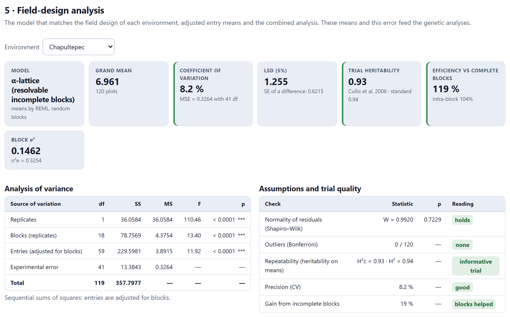
The tile Model gives the design and how the means were obtained; Grand mean, how many plots (or plants, or means) went in. The Coefficient of variation comes with the error mean square (MSE) and its degrees of freedom; the LSD (5%), with the average standard error of a difference between two means. Trial heritability gives that of Cullis, Smith and Coombes (2006) and the standard one. In designs with incomplete blocks there are also Efficiency vs complete blocks and the block variance (or those of rows and columns) with that of the error. The colored edge of some tiles sums up the reading: green if the value is good, amber if it is acceptable and red if it is poor.
At Chapultepec, the 120 plots give a mean of 6.961 t/ha, a CV of 8.2% (MSE = 0.3264 with 41 df) and an LSD of 1.255. The entries, adjusted for blocks, differ clearly (F = 11.92 with 59 and 41 df). The estimated block variance, 0.1462, and that of the error, 0.3254, are close to the values used in the simulation (0.20 and 0.36); with only 20 blocks per location, the former is imprecise. The efficiency of 119% means that with complete blocks about 19% more replicates would have been needed to compare the entries with the same precision; without recovering the inter-block information (intra-block analysis) the gain would be only 4%.
Entries are taken as random and checks as fixed (at least five entries that are not checks are needed); r is the harmonic mean of the replicates, vΔ the average prediction error variance of a difference and SED the average standard error of a difference. Cullis’s heritability also holds with unbalanced data or incomplete blocks. Both are a repeatability: they say how well the trial ranks the entries. Narrow-sense heritability, with σ²A, is estimated in Blocks 4 to 8.
To the right of the analysis of variance, a table checks the assumptions and gives a reading of each test, with the rules of Table 3.6. Tukey’s test is only done in balanced randomized complete blocks, and the gain from incomplete blocks only in the α-lattice and in rows and columns.
| Test | Fine | To check |
|---|---|---|
| Normality of residuals (Shapiro–Wilk) | p ≥ 0.05: holds | p < 0.05: check the Q–Q plot |
| Replicate × entry additivity (Tukey, 1 df) | p ≥ 0.05: additive | p < 0.05: non-additive: try a transformation |
| Outliers (Bonferroni) | none | some: review in card 4 |
| Repeatability (H²c) | ≥ 0.5: informative trial | 0.3 to 0.5: moderate; < 0.3: low: little discrimination |
| Precision (CV) | ≤ 12%: good | 12 to 20%: acceptable; > 20%: low |
| Gain from incomplete blocks | ≥ 5%: blocks helped | < 5%: little gain |
At Chapultepec everything comes out fine: normal residuals (W = 0.9920, p = 0.7229), no outliers, H²c = 0.93, a CV of 8.2% and a gain of 19% from the blocks. Hayman’s diallel is the opposite case: non-normal residuals (p = 0.0011) and non-additivity (p = 0.0006), which usually indicates that the trait should be transformed (for example, with the logarithm when the variance grows with the mean). The CV limits are only a guide: they depend on the crop and the trait.
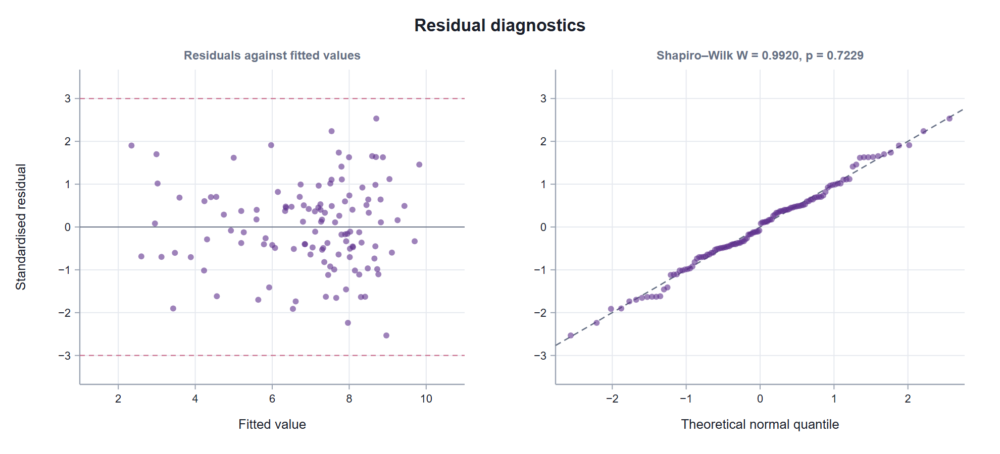
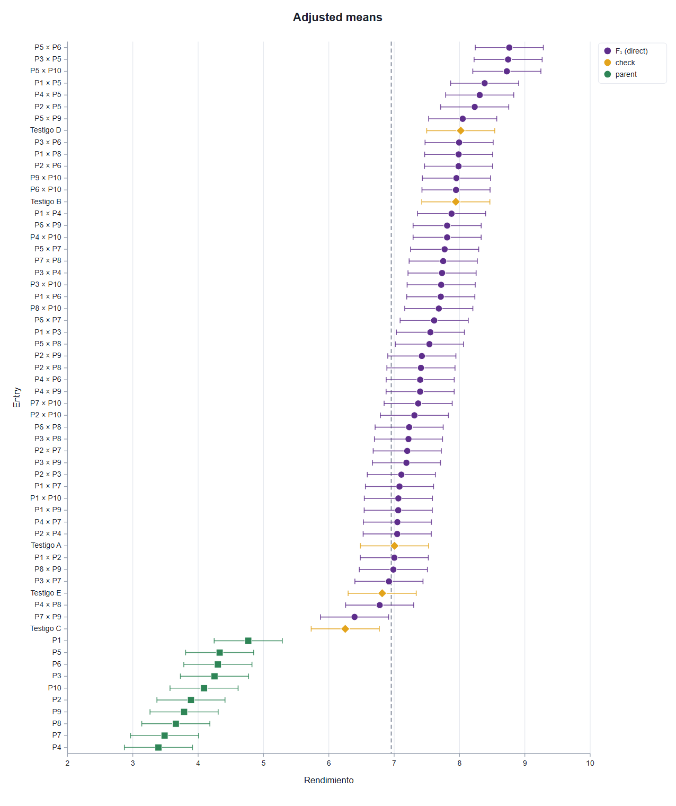
Below comes the table of Adjusted means, sorted from highest to lowest, with the rank, the entry, its type, the number of plots, the mean and its standard error. A dagger (†) marks the means that the design cannot estimate because the entry is not connected with the others. The figure of means (Figure 3.12, from the combined analysis) shows them with 95% confidence intervals and colors by type; its panel allows sorting them by name, limiting the number of entries (60 by default) and removing the intervals. On screen the table shows up to 300 rows; the download includes them all.
With two or more environments, the menu Environment offers the Combined analysis. It is fitted in one stage, with all the plots:
The block term enters, as a fixed effect, only if all the environments are α-lattices. Environments are tested against replicates within environments, and entries in two ways: against the entry × environment interaction, which is the right test if the environments are a random sample of the possible ones (column F), and against the pooled error, which is right if the environments are fixed (column F against error).
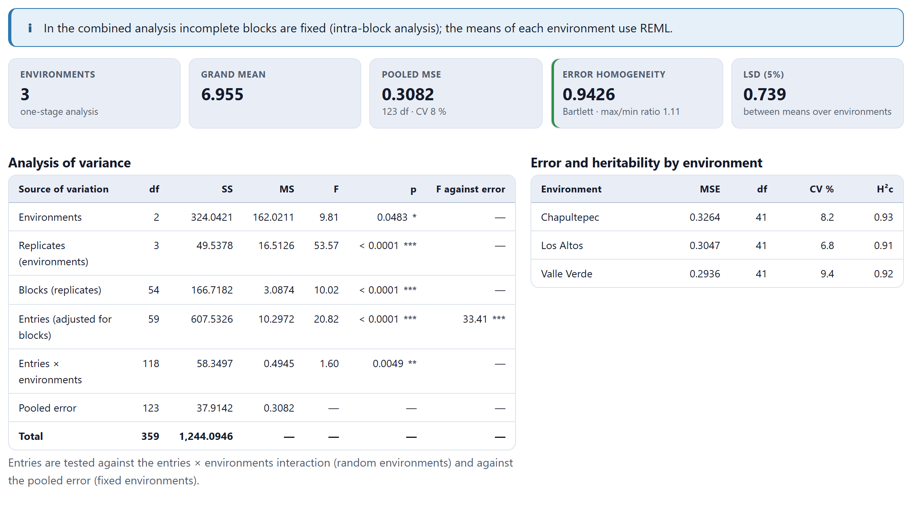
The tiles give the number of environments and whether the analysis was in one or two stages, the grand mean, the pooled MSE, the error homogeneity with Bartlett’s (1937) test and the ratio of the largest to the smallest MSE, and the LSD between means over all environments. In the example, the errors of the three locations are homogeneous (p = 0.9426, ratio 1.11), so combining them poses no problem. The entry × environment interaction is significant (F = 1.60, p = 0.0049) but small compared with the differences between entries (F = 20.82 against the interaction): the ranking of the crosses changes little from one location to another. The cross P5 × P6 has the highest mean, 8.7622 t/ha (Figure 3.12).
If Bartlett’s test gives p < 0.05, the card warns that the combined F tests are approximate. Such data call for a model with one error variance per environment, which is in Block 9 (two-stage analysis with REML).
If the one-stage model would have more than 1,400 parameters (many entries in many environments), the analysis is done in two stages (Möhring and Piepho, 2009): first the adjusted means of each environment and then an analysis of the entry × environment table, whose error is the average variance of the adjusted means, on the plot scale. The card says so and states how many parameters the full model would have had. Entries that are not in every environment are left out of that second stage; in one stage, if there are empty entry × environment combinations, the overall means come from the model without interaction.
When several rows share the same plot (or there is a column Plant / individual), the data are plant-level. Each plot is summarized by the mean of its plants and the analysis of variance is done with those means; the row Between plants within plots is added separately, on the plant scale, with the sampling error (Steel, Torrie and Dickey, 1997). The note below the table recalls that the sums of squares of the plots are on the mean scale (they are multiplied by the number of plants to bring them to the plant scale) and tests the experimental error against the sampling error. In the North Carolina I example, with three plants per plot, the between-plants row has 48 df and an MS of 0.074; F = 4.33 (p = 0.0002) says that the plots differ more than the plants explain: there is a genuine plot error.
In generation-mean experiments it is common to measure single plants, without replicates, blocks or plots. Then each plant is an experimental unit and the plants of each generation are its replicates: the design is completely randomized and the replicates tile gives the median number of plants per entry. With the six generations of N. rustica (160 plants) the result is a CV of 12%, an MSE of 1.8503 with 154 df, an LSD of 0.884 and a trial heritability of 0.98.
With a single value per entry, the data are means and the error cannot be estimated. Card 3 then shows the box Error of the original experiment: for each trait, the error mean square, its degrees of freedom, its scale and the replicates (on the plot scale, the MS is divided by the replicates). With it there are standard errors, LSD and tests in the genetic blocks; without it, only means. The mean examples bring their error: 21.05 with 2,558 df on the mean scale in the 36 maize crosses (LSD = 12.723), and 1.8 with 576 df on the plot scale, with four replicates, in the 17 genotypes (0.45 for the means).
In the augmented design, the checks are repeated in every block and the new entries appear once. The blocks are fixed and are estimated from the checks; each new entry is adjusted for the effect of its block (Federer, 1956). With two or more checks, the entries sum of squares is split into Checks and New entries and new vs. checks, and the note gives that of blocks eliminating entries.
At the foot of card 5 there are three downloads, which include all the traits and all the environments, not just what is on screen. Each figure also has its own download panel (Section I.6).
| Button | Content |
|---|---|
| Results (.xlsx) | Five sheets: Means (by trait and environment, and combined); ANOVA (all sources, with df, SS, MS, F and p); Quality (design, plots, mean, CV, MSE, error df, LSD, Cullis and standard H², σ²g, block σ², p of Shapiro–Wilk and of Tukey, outliers); Data (the table with the column Excluded); Design (mating, method, parents, field design, environments and source) |
| Adjusted means (.csv) | Trait, environment, entry, type, plots, adjusted mean and standard error |
| Cleaned data (.csv) | The original table with a column Excluded (1 if the observation was left out) |
In addition, at the end of card 5, How is each design analysed? sums up the methods of Sections 3.5 to 3.7 with their references, ready for the materials and methods section of an article; the report of Block 12 includes them in full prose.
The button Continue at the end changes according to the recognized mating design (Table 3.8); in the example it reads Continue: Griffing →. ← Plan goes back to Block 2. The other blocks are always one click away in the top bar.
| Recognized design | Next block |
|---|---|
| Griffing diallel (complete) | 4 Griffing diallels (and then 5) |
| Partial diallel, North Carolina designs, triple test cross, line × tester | 6 Mating designs |
| Generation means | 7 Generations |
| Genotype trial in one environment | 8 Genetic parameters and selection |
| Genotype trial in several environments | 9 Genotype × environment |
What passes to the following blocks is the table with its roles, the records with their pedigree, the mating and field designs, the excluded observations, the external error and, for each trait, the analysis of this card (adjusted means, MSE and degrees of freedom), which is computed the first time a block asks for it. Any change in Block 3 (a role, the design, an exclusion) is reflected in them when they are opened again. As in the rest of the app, the loaded data and the results are not kept when the page is reloaded; only the data sheet is kept in the browser.
| If a column was left with a wrong role or as Ignore… | then correct it in card 2: everything else depends on it. |
| If the mating design has medium or low confidence… | then read the reasons and check Recognised entries and the figure of crosses present. |
| If there are outliers… | then compare them with the field book and exclude only proven errors. |
| If normality or additivity fail… | then consider transforming the trait before loading it again. |
The genetic blocks use exactly what remains in Block 3: its data, its design, the excluded observations and the external error.